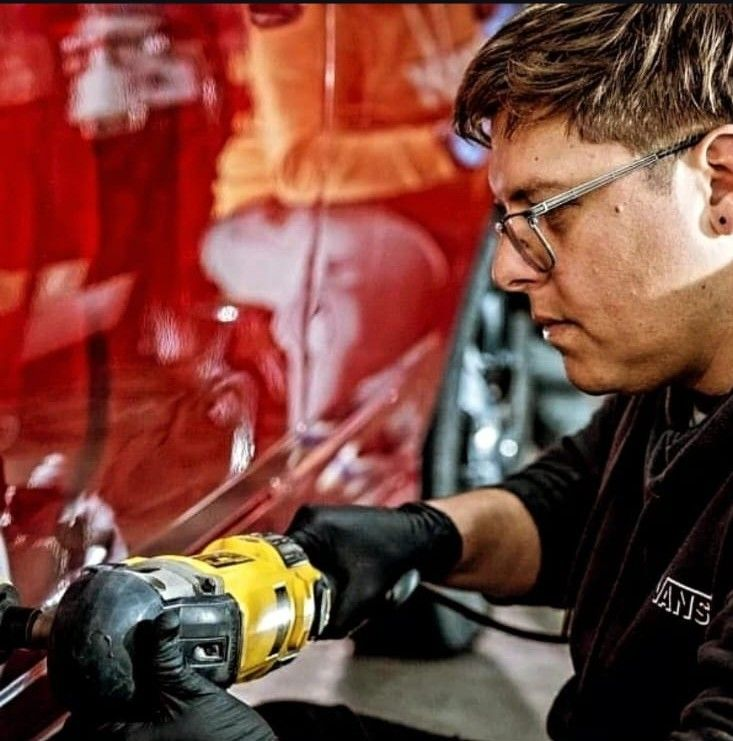
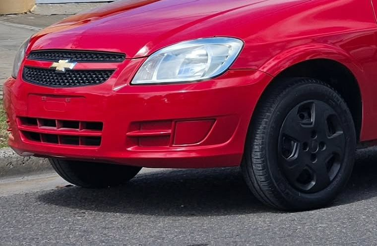
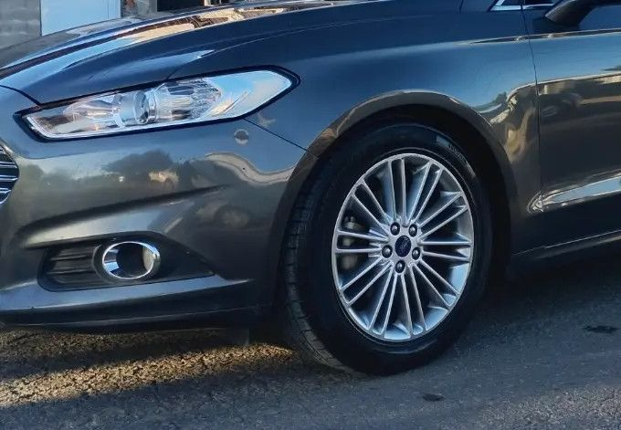

Peugeot 408: interior en proceso
Detailing y estética automotriz, con atención en cada vehículo.

Lauty Detailing es un emprendimiento dedicado al detailing y la estética automotriz en Villa Constitución, Santa Fe.
Lautaro Valia está al frente del trabajo diario: lavado, limpieza interior, pulido de pintura y tratamiento cerámico. Nuestra idea es simple: que cada auto salga con un aspecto del que su dueño se sienta orgulloso.
Mostramos nuestro trabajo en Instagram: @lautyv99.
Hablar con Lautaro
El detailing es el cuidado minucioso de un vehículo: va más allá del lavado común y trabaja la pintura, el interior, las ópticas y las zonas de difícil acceso con productos y métodos específicos.
No se trata solo de que el auto esté limpio, sino de que esté bien presentado y mejor cuidado. Cada vehículo tiene un estado distinto, y por eso cada trabajo se adapta a lo que necesita.

El auto está presente en la rutina de todos los días. Mantenerlo limpio, protegido y bien presentado mejora la experiencia de manejarlo y ayuda a que conserve mejor su aspecto con el tiempo.
Un cuidado regular también permite detectar a tiempo marcas, suciedad acumulada o desgaste en la pintura y las ópticas.
Los detalles son lo que separa un lavado de un trabajo de detailing. Los revisamos uno por uno.
Cada auto se trabaja con tiempo y dedicación, sin apurar los procesos.
Evaluamos el estado del vehículo y te recomendamos lo que realmente necesita.
Algunas imágenes del proceso. Tocá una para ampliarla.